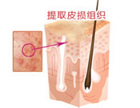
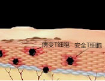
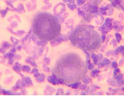
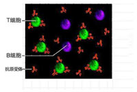
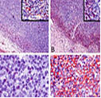
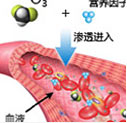
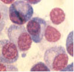
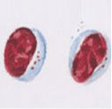
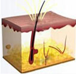

医院动态
媒体报道
在线问答
我院白癜风专家林红银主任：细谈白癜风芬芳地方
随着夏季的来临，白癜风不断高发。很多网友在网上咨询白癜风为何高发？得了白癜风怎么办？怎样才能有效...[查看详情]
- 我院白癜风专家林红银主任：细谈夏白癜风吩咐你的
- 健康报：卫生部召开2014银屑病规范诊疗
- 我院白癜风专家林红银主任：细谈夏白癜风吩咐你的
- 健康报：卫生部召开2014银屑病规范诊疗
- 我院白癜风专家林红银主任：细谈夏白癜风吩咐你的
媒体报道
专家问答
聚焦卫生部
“3D净血细胞祛癣疗法”银屑病规范诊疗大会指定规范诊疗技术
1115500950
为积极促进银屑病的医学与诊疗技术研究、更好的引领银屑病诊疗技术领域的快速发展，由中华中医药学会主办，主题为“促进国内医学交流，引领规范诊疗发展”，荟萃国内顶尖银屑病医学专家的“2014银屑病规范诊疗及健康教育高峰论坛暨全国银...[详细]
CCTV专家教你正确认识银屑病
CCTV专家教你正确认识银屑病
CCTV专家教你正确认识银屑病
CCTV专家教你正确认识银屑病
聚焦名医堂
汇聚国内顶级银屑病专家，铸就专科典范
戴礼罗兰珍
028-62066666
- 中华医师协会皮肤性病分会常任理事
- “3D净血细胞祛癣疗法”科研带头人
- 四川省皮肤病国际技术研究委员会委员
- 中华银屑病名医堂专家组成员
- 中华银屑病协会会员
- 中华银屑病名医堂专家组成员
- 中华疑难皮肤病科研中心特邀专家
- 成都银屑病研究院附属医院主任医师
规范化技术
“3D净血细胞祛癣疗法”-银屑病规范诊疗的典范
1115500950
3D净血细胞祛廯疗法
以成都白癜风医学研究院附属医院林永祥教授领头研创的"蓝氧祛白疗法"实现了中西医学的完美结合，以自身血液净化功效，阻断白癜风发病根源，开创了血液祛白新纪元，以零复发、无伤痛治愈被北美国家相继引进临床治疗中去，让中国白癜风诊疗从此登上国际舞台，成为国内首项获得世界卫生组织（WHO）大力推广的白癜...[查看详情]
-  步骤一 确定患者皮损部位，通过3D断层成像检测进行检查
-  步骤二 患者病变皮肤组织3D影像，实现对T、B细胞定位检测
-  步骤三 最后在共聚显微镜下显示的皮损病变细胞
-  检测结果表明 T、B细胞3D图是实现临床细胞治疗最有效途径，病灶部位放大10万倍
3D皮肤断层检测精准检测定位分级
银屑病的变化较多，在不同时期可有不同表现。皮疹小的只有针头大，大的可以覆盖大片部位；皮疹数目不定，有的只有1个，有的极多；皮疹形状也不定，呈圆形，地图形或不规则形；个人的自觉症状不同，有的有剧痒，有的几乎不痒，而一般健康通常不受影响。3D自体净血疗法利用“3D皮肤断层检测”...[详细]
数据分析
皮损处角质层病变区域T细胞、B细胞活性状态、病变情况以及免疫力现状
正常皮肤组织
T细胞、B细胞数量分布均匀、活跃程度正常、细胞活性及免疫力状态与标准数据相符。
受损皮肤组织
T、B细胞数量分布失衡、T细胞活跃程度受制，凋亡周期加速，生长周期缓慢；B细胞病变数量增加，持续细胞分裂，凋亡与生长周期加快。
1
细胞成像、可视治疗
运用独特的3D断层成像可视检测，全面诊断银屑病病因症状，避免误诊漏诊。
3
中西结合、强化治疗
摒弃大量外用擦剂，精心选配中药组方，天然绿色安全。
5
复位净肤、修复斑痕
从源头起效，外部加速病变皮损消退，内部快速恢复细胞正常功能，促使健康皮肤生成。
2
净血清毒、细胞修复
利用尖端医疗设备，抑制T细胞活性、修复B细胞病变平衡内分泌系统，确保整体康复。
4
立足血液、抑制复发
立足银屑病血液致病根源，本源修正、外因控制，调节患者自身免疫力，增强对外抵抗力，再造人体内循环环境，有效控制再次复发可能，真正做到全面治愈不反复。
媒体报道：3D净血细胞祛癣疗法
国家“火炬计划”重点皮肤病科研医学项目联合成都银屑病研究院附属医院研发的银屑病3D净血细胞祛癣疗法——免疫靶向治疗，突破传统银屑病治疗疗程长、不彻底、易复发等技术瓶颈，实现了银屑病诊疗彻底、高效的医学奇迹。3D净血细胞祛癣疗法自推出后受到国内外医学界广泛关注，临床治疗银屑病创下当前治疗最高标准记录，高达98.7%的临床有效率。银屑病3D净血细胞祛癣疗法由16项核心，其中包括...[详细]
准则一：四级诊断，全面检测
1
级诊断：根据临床症状，初步诊断
2
级诊断：依据设备检测，精准分类
3
级诊断：参考既往病史，查找突破
4
级诊断：专家会诊，确诊病因
准则二：四维辩证，制定方案
多种发病因素不同患者体质差异
银屑病在不同患者身上的具体特征
国际先进仪器中医理论辩证施治
准则三：多维治疗，追本溯源
1对银屑病病理机制进行追本溯源
2易感基因，靶向治疗，阻断机制
3免疫调节自体修复，避免再次活化
4多维治疗，增强自身抵抗力
3D净血细胞祛癣疗法
查看更多康复项目
3d皮肤断层检测
净血技术修复皮损
修复调节性B细胞
抑制T淋巴细胞
病灶部位复色
实现抗复发

针对银屑病的不同患病人群，部位，临床病例特征及患者的皮损程度的不同进行精准的分型分度治疗...[详情]

患者血液中的毒素清除后，快速恢复脏腑正常功能，促进银屑病治疗药物吸收和转化，加快健康速度...[详情]

皮肤淋巴细胞相关抗原CLA-PSGL-1和CLA-CD43复合体与皮肤微血管表达的E-和P-选择素结合修复调节性B细胞...[详情]

T淋巴细胞活性增强会导致皮肤局部坏死和代谢速率增加，形成皮损。抑制T淋巴细胞活性，有效降低其发病几率...[详情]

直接作用于病灶部位，渗透于细胞之中，建立稳定的血液净毒环境，最终达到标本兼治，有效抑制复发的目的...[详情]
为人体筑起健康屏障，防止调节性B细胞病变，长效抑制T淋巴细胞活性，从而实现银屑病的抗复发治疗...[详情]
| 传统疗法 | PK | 3D净血细胞祛廯疗法 |
| 痛苦大 | 痛苦度 | 无痛苦 |
| 伤害大，易出血，辐射大，杀伤性强，有刺激 | 并发症 | 无创伤，不出血，对皮肤无伤害，无并发症 |
| 皮肤易破损留下疤痕 | 有无疤痕 | 无疤痕，不伤害 |
| 否 | 是否可视 | 全程超导可视 |
| 治疗次数多，不能彻底治愈 | 治疗效果 | 临床康复周期缩短38.9%，临床抗复发增加71.1%，临床治愈率提升至98.7%，有效率100% |
| 推荐效果 |
- 三级检测，锁定病因 detection and lock etiology
- 五大治疗优势 five major advantage
- 三大治疗准则 three treatment guidelines
- 八大康复项目 eight rehabilitation project
- PK传统疗法 traditional pk therapy
康复案例
5万余例康复患者的一致反馈：疗程短、无复发
028-62066666
半年白斑在我院治愈银屑病的奇迹
【基本资料】患者信息：李梅斯蒂芬斯蒂芬（化名），女，14岁...[详情]
半年白斑在我院治愈银屑病的奇迹
【基本资料】患者信息：李梅斯蒂芬斯蒂芬（化名），女，14岁...[详情]
半年白斑在我院治愈银屑病的奇迹
【基本资料】患者信息：李梅斯蒂芬斯蒂芬（化名），女，14岁...[详情]
半年白斑在我院治愈银屑病的奇迹
【基本资料】患者信息：李梅斯蒂芬斯蒂芬（化名），女，14岁...[详情]
我有类似情况，我要咨询
我要咨询医生，预约挂号
银屑病健康讲堂
Psoriasis Health Forum
1115500950
公益事业
/public welfare undertakings
成立百万援助基金到的的
成立百万援助基金到的的
成立百万援助基金到的的
成立百万援助基金到的的
临床科研
/clinical research
成立百万援助基金到的的
成立百万援助基金到的的
成立百万援助基金到的的
成立百万援助基金到的的
领导题词
/the leadership of the inscription
成立百万援助基金到的的
成立百万援助基金到的的
成立百万援助基金到的的
成立百万援助基金到的的
医院环境